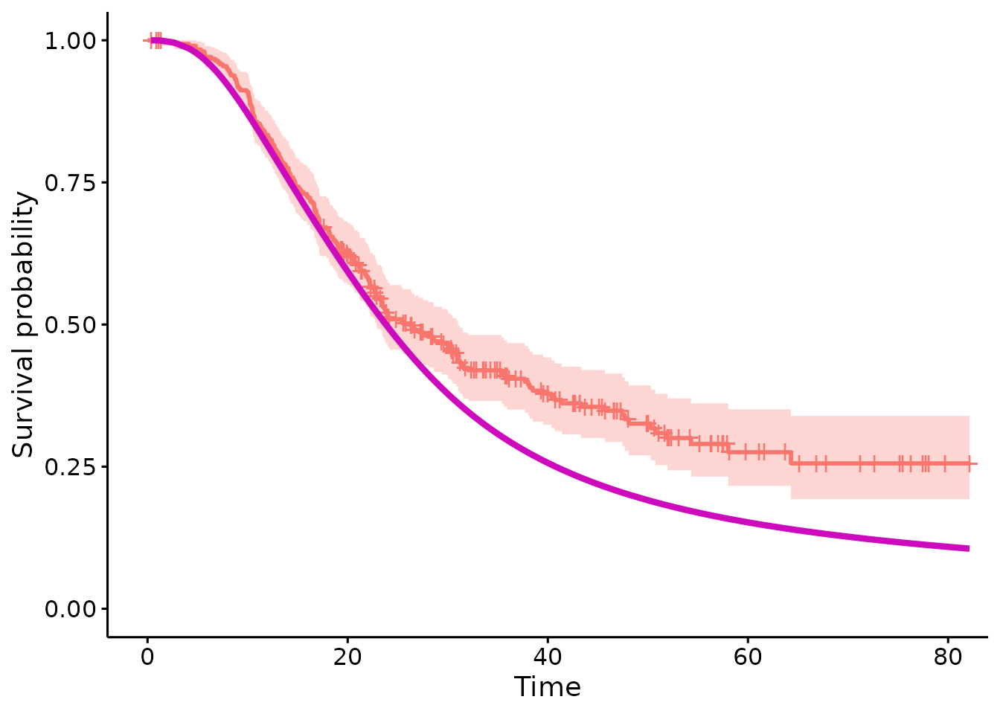

Introduction
The psc.R package implements the methods for applying Personalised Synthetic Controls, which allows for patients receiving some experimental treatment to be compared against a model which predicts their reponse to some control. This is a form of causal inference which differes from other approaches in that
Data are only required on a single treatment - all counterfactual evidence is supplied by a parametric modelCausal inference, in theory at least, is estimated at a patient level - as opposed to estimating average effects over a population
The causal estimand obtained is the Average Treatment Effect of the Treated (ATT) which differs from the Average Treatment Effect (ATE) obtained in other settings and addresses the question of whether treatments are effective in the population of patients who are treated. This estimand then targets efficacy over effectivness.
In its basic form, this method creates a likelihood to compare a cohort of data to a parametric model. See (X) for disucssion on it’s use as a causal inference tool. To use this package, two basic peices of information are required, a dataset and a model against which they can be compared.
In this vignette, we will detail how the psc.r package is constructed and give some examples for it’s application in practice.
Methodology
The pscfit function compares a dataset (‘DC’) against a
parametric model. This is done by selecting a likelihood which is
identified by the type of CFM that is supplied. At present, two types of
model are supported, a flexible parmaeteric survival model of type
‘flexsurvreg’ and a geleneralised linear model of type ‘glm’.
Where the CFM is of type ‘flexsurvreg’ the likeihood supplied is of the form:
Where defines the cumulative baseline hazard function, is the linear predictor and and are the event time and indicator variables.
Where the CFM is of the type ‘glm’ the likelihood supplied is of the form:
Where , and represent the functions of the exponential family. In both cases, is defiend as:
Where are the model coefficients supplied by the CFM and is the parameter set to measure the difference between the CFM and the DC.
Estimation is performed using a Bayesian MCMC procedure. Prior distributions for (& ) are derived directly from the model coefficients (mean and variance covariance matrix) or the CFM. A bespoke MCMC routine is performed to estimate . Please see ‘?mcmc’ for more detials.
For the standard example where the DC contains information from only a single treatment, trt need not be specified. Where comparisons between the CFM and multiple treatments are require, a covariate of treamtne allocations must be specified sperately (using the ‘trt’ option).
Package Structure
The main function for using applying Personal Synthetic Controls is the pscfit() function which has two inputs, a Counter-Factual Model (CFM) and a data cohort (DC). Further arguments include
- nsim which sets the number of MCMC iterations (defaults to 5000)
- ‘id’ if the user wishes to restrict estimation to a sub-set (or individual) within the DC
- ‘trt’ to be used as an initial identifier if mulitple treatment comparisons are to be made (please see the Mulitple Treatment Comparison below)
psc object
The output of the “pscfit()” function is an object of class ‘psc’. This class contains the following attributes
- A definition of the calss of the model supplied
- A ‘cleaned’ dataset including extracted components of the CFM and the cleaned DC included in the procedure
- An object defingin the class of model (and therefore the procedure applied - see above)
- A matrix containing the draws of the posterior distributions
Motivating Example
The psc.r package includes as example a dataset “e4_data” which is derived from patients ith pancreatic ductal adenocarcinoma (PDAC) who have all received some experimental treatment, in this case GemCap. Aside from this we also provide a Counter Factual Model (CFM) for patients in the same setting (named ‘gemCFM’) to receive a therapy called ‘Gem’. The aim here is to produce a ‘GemCap Vs Gem’ comparison. We start by loading the package and from there obtianing the data and the model for analysis.
remove.packages("psc")
#> Removing package from '/home/runner/work/_temp/Library'
#> (as 'lib' is unspecified)
#rm(list=ls())
library(devtools)
#> Loading required package: usethis
install_github("richjjackson/psc")
#> Using github PAT from envvar GITHUB_PAT. Use `gitcreds::gitcreds_set()` and unset GITHUB_PAT in .Renviron (or elsewhere) if you want to use the more secure git credential store instead.
#> Downloading GitHub repo richjjackson/psc@HEAD
#> digest (0.6.37 -> 0.6.38) [CRAN]
#> lsoda (NA -> 1.2 ) [CRAN]
#> rstpm2 (1.7.0 -> 1.7.1 ) [CRAN]
#> Installing 3 packages: digest, lsoda, rstpm2
#> Installing packages into '/home/runner/work/_temp/Library'
#> (as 'lib' is unspecified)
#> ── R CMD build ─────────────────────────────────────────────────────────────────
#> * checking for file ‘/tmp/RtmpK9RbPL/remotes216639ea9ef3/richJJackson-psc-94482ab/DESCRIPTION’ ... OK
#> * preparing ‘psc’:
#> * checking DESCRIPTION meta-information ... OK
#> * checking for LF line-endings in source and make files and shell scripts
#> * checking for empty or unneeded directories
#> * building ‘psc_2.0.0.tar.gz’
#> Installing package into '/home/runner/work/_temp/Library'
#> (as 'lib' is unspecified)
library(psc)
#> Loading required package: survival
#> Loading required package: ggplot2
e4_data <- psc::e4_data
gemCFM <- psc::gemCFM#{r} #library(parallel) #library(posterior) #library(ggplot2) #library(survminer) #library(ggpubr) #library(survival) #
Starting with the model, we can inspect the model terms included in the counter factual model using
gemCFM$terms
#> [1] "LymphN" "ResecM" "Diff_Status" "PostOpCA199" "(weights)"Included is a list of prognostic covariates:
- Lymph Nodes: patient lymph node status; negative (n=1) or positive (n=2) lymph nodes
- Diff_Status: tumour grade; 1,2 or 3
- PostOpCA199: log transformed ca19.9
Similarly we can observe the outcome terms. As the gemCFM object is a survival model this includes terms named “time” and “cen”. NB the pscfit function will search for these terms and so it is important that outcomes included in the data cohort (DC) are labelled in the same way.
gemCFM$out.nm
#> [1] "time" "cen"Importantly the covariates included in the DC must have names which
match these.
Prior to comparing the DC to the CFM then it is advisable to get an good
understanding of the data included in the CFM. Within the CFM object
there are a series of plots to visualise the covariate values which can
be extracted using the ‘plotCFM’ function
plotCFM(gemCFM)
We give esamples of how the ‘pscfit()’ function can be used to comapre data against models with survival outcomes (with a ‘flexsurvreg’ model). Examples on how to perform analyses using GLM model objects are available from the github repo https://github.com/richJJackson/psc
Survival Example
For an example with a survival outcome a model must be supplied which is contructed ont he basis of flexible parametric splines. This is contructed using the “flexsurvreg” function within the “flexsurv” package. An example is included within the ‘psc.r’ package names ‘surv.mod’ and is loaded using the ’data()” function:
The ‘gemCFM’ is an object of class pscCFM which means it contains all of the structures required for analysis but has stripped the model object of any patient level data. Please note that the psc package can be used by providing standard ‘glm’ or ‘flexsurvreg’ models. Here the procedures will convert the model into a ‘pscCFM’ object using the pscCFM() function.
In this example the ‘gemCFM’ model is constructed with 5 internal knots and hence 7 parameters to describe the baseline cumulative hazard function:
gemCFM$haz_co
#> gamma0 gamma1 gamma2 gamma3 gamma4 gamma5
#> -11.3808020 3.8359818 1.2911623 -1.3176560 1.1190182 -0.8876277
#> gamma6
#> 0.3372484There are also prognostic covariates which match with the prognostic covariates in the data cohort….
gemCFM$cov_co
#> LymphN1 ResecM1 Diff_Status1 Diff_Status2 PostOpCA199
#> 0.4876152 0.1805322 -0.4160534 -0.5897823 0.2671471The process of comparing the DC to the CFM occures across 4 steps:
- Step 1: Combine/Compare the DC and the CFM using the pscData() function
- Step 2: Obtain initial values for the estimation procedue using init()
- Step 3: Run the MCMC estimation procedure
- Step 4: Collate and summarise the results
Each of these steps update a ‘pscOb’ object resutls which is returned to the user. This process is wrapped up in a single ‘pscfit()’ function/
NB. A warning is supplied here just to note that data have been removed form the DC prior to analysis due to missing data.
We can view the attributes of the psc object that is created. This includes details on all components including the CFM, the DC, the likelihood applied, the starting values and posterior distribuion
attributes(surv.psc)
#> $names
#> [1] "mod_class" "terms" "out.nm" "cov_class" "cov_lev" "co"
#> [7] "cov_co" "sig" "haz_co" "k" "kn" "lam"
#> [13] "formula" "datasumm" "datavis" "DC" "lik" "start.mu"
#> [19] "start.sd" "cfmPost" "target" "betaPrior" "ncores" "draws"
#> [25] "postFit" "postEst"
#>
#> $class
#> [1] "psc"Its worth noting that as part of the ‘pscData()’ function which ensures the DC and CFM are compatible - the ‘datavis’ object has been updated. This will now produce a useful figure to allow evaulation of how comparable the data from the CFM and DC are using the ‘plotCFM()’ function
plotCFM(surv.psc)
We make use of the ‘posterior’ package to summarise the posterior distributions (saved within the ‘draws’ object). Both ‘print()’ and ‘coef()’ will show these although the ‘summary()’ function provides mode information:
This includes information on the underlying CFM as well as expected meand response for patients in the DC along with 95% CI (obtianed using bootstrapping). A summary of the MCMC fit is supplied along with the overall summary of the posterior distribution.
summary(surv.psc)
#> Counterfactual Model (CFM):
#> A model of class 'flexsurvreg'
#> Fit with 5 internal knots
#>
#> CFM Formula:
#> Surv(time, cen) ~ LymphN + ResecM + Diff_Status + PostOpCA199
#> <environment: 0x558001604080>
#>
#> CFM Summary:
#> Expected response for the outcome under the CFM:
#> S lo hi
#> 30.30 25.51 35.79
#>
#> Observed outcome from the Data Cohort:
#> [,1]
#> median 26.33
#> 0.95LCL 22.85
#> 0.95UCL 31.03
#>
#> MCMC Fit:
#> Posterior Distribution obtaine with fit summary:
#> variable rhat ess_bulk ess_tail mcse_mean
#> [1,] beta_1 1.003578 933.1359 1069.9 0.00278219
#>
#> Summary:
#> Posterior Distribution for beta:Call:
#> CFM model + beta
#>
#> Coefficients:
#> variable mean sd median q5
#> posterior beta_1 -0.004570621 0.08599047 -0.002258437 -0.1444204
#> q95
#> posterior 0.1341535Lastly to visualise the original model and the fit of the data, the plot function has been included
plot(surv.psc)
#> variable mean sd median q5
#> posterior beta_1 -0.004570621 0.08599047 -0.002258437 -0.1444204
#> q95
#> posterior 0.1341535
#> Warning: Using `size` aesthetic for lines was deprecated in ggplot2 3.4.0.
#> ℹ Please use `linewidth` instead.
#> ℹ The deprecated feature was likely used in the ggpubr package.
#> Please report the issue at <https://github.com/kassambara/ggpubr/issues>.
#> This warning is displayed once every 8 hours.
#> Call `lifecycle::last_lifecycle_warnings()` to see where this warning was
#> generated.
#> Ignoring unknown labels:
#> • colour : "Strata"